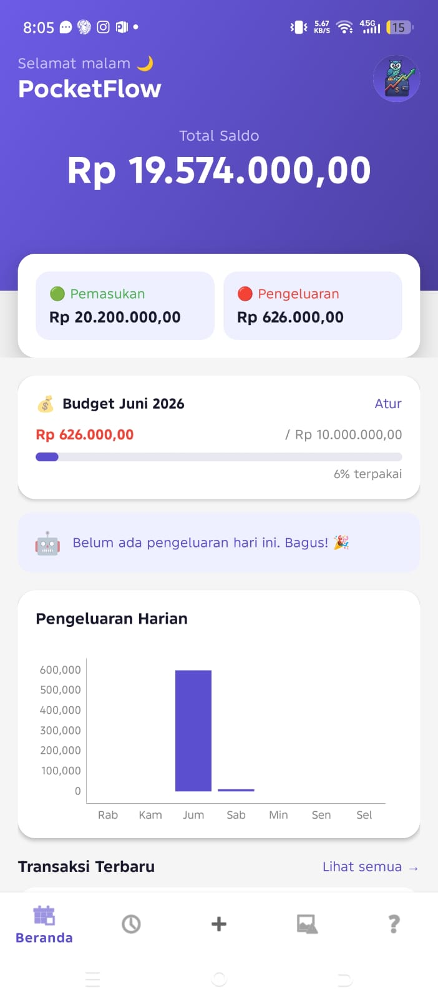
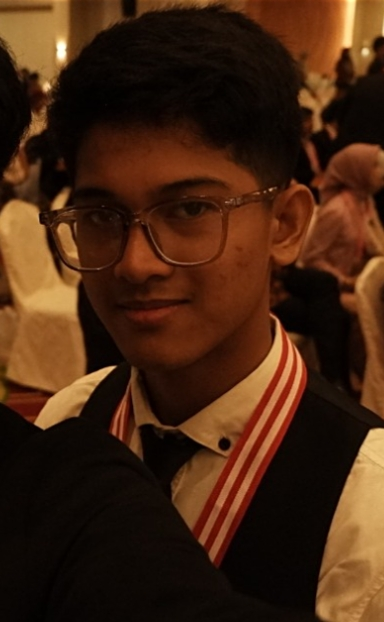
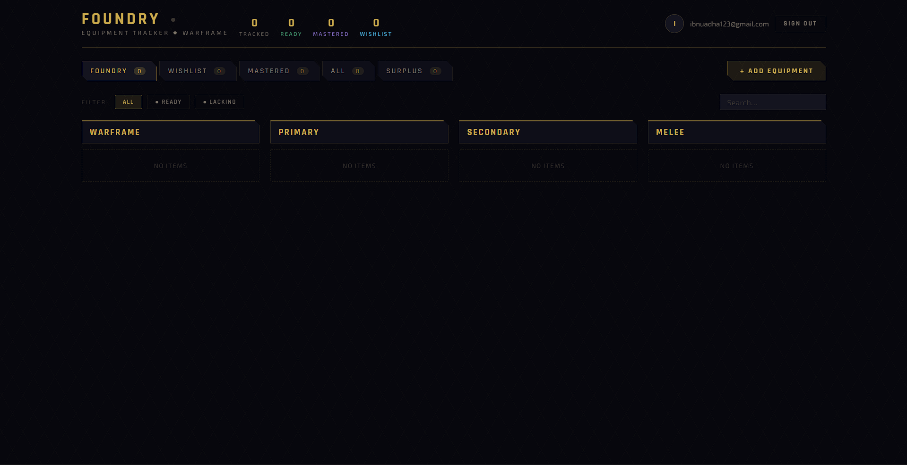
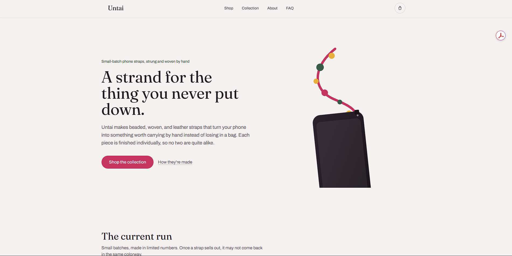

PocketFlow
PocketFlow adalah aplikasi expense tracker yang dilengkapi dengan fitur AI.
- Kotlin
- C++
- Firebase

Saya mahasiswa Ilmu Komputer di FASILKOM-TI yang memiliki ketertarikan kuat pada pengembangan web, UI/UX, dan pembuatan aplikasi. Saya mulai tertarik dengan coding sejak SMP dan terus mengembangkan kemampuan melalui proyek kuliah, proyek pribadi, dan pengembangan produk digital.
4+
Proyek yang dikerjakan
5+
Tahun belajar coding
8+
Teknologi yang dipelajari
Teknologi yang pernah saya gunakan dalam proyek kuliah, pribadi, dan pengembangan produk.

PocketFlow adalah aplikasi expense tracker yang dilengkapi dengan fitur AI.

Foundry Tracker adalah website progression tracker untuk game warframe.

Untai Store adalah bisnis digital berbasis website yang menjual berbagai aksesoris gawai.
Punya ide proyek, pertanyaan, atau ingin berdiskusi tentang pengembangan web? Hubungi saya melalui salah satu kanal ini.